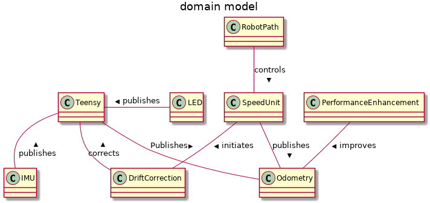
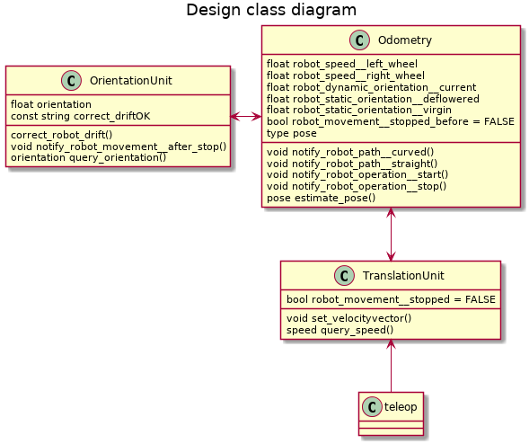
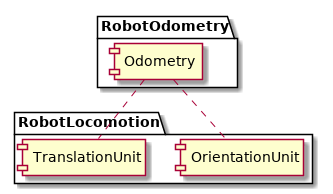

Table of Contents
1 Formal document
1.1 Glossary
- Teensy: The unit(microcontroller) that houses the IMU and the LED contro for thr robot
- IMU/Orientation unit: The unit in the teensy that provides data for orientation. It also provides data for velocity and acceleration
- Drift: The IMU unit is susceptible to drifts. A drift involves the calculated value deviating from the true value.
- Motor-controller: The motor controller is responsible for controlling and qyerying the state of the motor. It is the interface for the motor.
- Orientation : The data that arrives from the IMU unit in the Teensy
- Odometry: Odometry is an algorithm that calculates an estimate(predicts) of the position of the robot in the next instance of time(AMBIGUOS_: sergi suggests next sample instance) by taking in the velocity and the angular velocity.
- Pose: A robots unit of position is the pose, it is a vector of x-cordinate, y-cordinate, and its angle of orientation(theta) represented as [x y theta]
1.2 TODO Requirements [0%]
1.2.1 TODO Functional [0%]
[ ]The system shall utilize orientation and speed from Orientation unit and MotorController respectively when it is moving in a curved path .[ ]The system shall use the speed from the motor controller and the orientation set to previous state/null(depending on whether the robot just started operation; then null, else previous state) when the robot is moving in a straight line.[ ]The system shall do drift correction when the robot stops.
1.2.2 TODO Non-Functional [0%]
- Technical requirements
[ ]The system shall publish the data to a relevent topic[ ]The system shall set the speed for the motor.[ ]The system shall publish the data to a relevent topic.[ ]The system shall publish the data as a quarternian using the tf broadcast. x, y and use yaw value. The yaw shall be transformed to a quarternian.[ ]The system shall implement the algorithm for taking the velocity from the motor-controller and the Orientation data from the IMU sensor to estimate the pose,i.e [x y theta] of the robot[ ]The system shall publish the data to the navigation stack.[ ]The system shall include covarience in the odom pose messages.
- Usability
[ ]The system shall provide a channel of communication for LED requests in the robot.
- Reliability
[ ]The system shall have a reboot functionality for Teensy[ ]The system shall query the state(alive or dead) of Teensy.
- Performance
[ ]The system shall use performance enhancements such as RTPREEMPT, CPU shielding, priority scheming. In essence there is a requirement for performance[ ]The system shall timestamp every sample of IMU and encoder data.[ ]The system shall measure jitter with the help of the timestamps of every samples of IMU and encoder data.
- Supportability
1.3 TODO User stories [0%]
[ ]The Teensy continuously publishes both IMU data and other (currently) irrelevent data. The IMU data is filtered for our purposes. . The orientation is captured from this data. Each sample is timestamped and the difference in Timestamps is measured.[ ]When the robot stops. The program sends a command for drift correction to Teensy, when the robot moves, the program sends another command. This is like a complementary filter.[ ]The Motor controller has control over the motor. We send velocity commands to it in a periodic interval to make the motor run. The motor controller sends speed periodically.[ ]The data from the /encoder/(speed) and the /IMU/(orientation) are fed to the odometry algorithm with the help of topics. The speed from the encoder is used when the robot is navigating in a straight line, but the IMU data is not used . When the robot is turning we start using the IMU to gather the orientation while the encoder speed is still used. It needs to accomplish two parts, publish the data with TF broadcast and publish the data to the navigation stack. The details of achieving the two tasks are explained in https://wiki.ros.org/navigation/Tutorials/RobotSetup/Odom
1.4 Domain modelling
1.4.1 Activity diagrams modelling behaviour of system blocks(domain)
1.4.2 event decomposition technique
A technical document just before the use-cases, Identifying the elementary business process(EBP)
- external events
[X]The data from Teensy comes in[X]the data from the motor controller with speed comes in
- temporal events
[X]the command to move the motor with speed command is sent
- state events
[X]when the robot stops, the drift correction command is sent to Teensy[X]when the robot moves, the robot moving command is sent.[ ]when the robot moves in a straight line the velocity is taken from the motor controller and the orientation is taken from the previous state and is kept constant.[ ]when the robot moves in a curved path the velocity is taken from the motor controller and the orientation is taken from the IMU.
1.4.3 event table
| Event | Trigger | Source | Usecase | Response | Destination |
|---|---|---|---|---|---|
| Teensy data comes in | Teensy data | Teensy | process Teensy data | provide Orientation | |
| Time to send motor speed command | "every 5ms" | set motor speed | Motor Controller | ||
| Speed data comes in | "every 3ms" | Motor-controller | Process speed for Odometry | provide odometry estimation | |
| Robot stops | robot stopped | (internal state) | provide drift correction | command to correct drift | Teensy |
| Robot moves after stopping | robot moves after stop | (internal state) | update after drift correction | command to move after correct. | Teensy |
| Robot moves in a straight line | robot moves straight | (internal state) | process velocity fix orientation | utilize velocity | |
| Robot moves in a curved path | robot moves in a curve | (internal state) | process velocity process orientation | utilize velocity and orientation |
1.4.4 Domain class diagram
Models the domain as seen from the designer, Note that all the domain classes have a multiplicity of 1

1.4.5 Use cases
process robot path:
process robot path Brief description: Processes that occur when a robot moves in a curved or straight path Primary actors: 1. MotorController 2. Teensy PreConditions: 1. Teensy is publishing data continuosly 2. The data published contains Orientation data 4. The port to access Teensy is open 5. The motor is functional. 6. The motor controller is functional. 7. The motor controller responds to user requests 8. The port to access motor Controller is open. 9. Speed data is continuosly being sent from the motorController PostConditions: 1. The Odometry algorithm makes a pose estimate for the future Main Scenario: 1. When the timer condition of 3ms expires the motor controller is requested to set the speed of the motor. 2. When a condition is detected that the robot moves in a curved path, the current orientation and speed are used from the orietation unit and MotorController respectively. 3. The odometry and speed are passed as inputs to the odometry algorithm Alternative Scenario : 2.a. When the robot just initiates its movement, we set either the value of orientation to zero or some pre-determined value. Speed is taken from the motor controller. 2.b. When the condition is detected that the robot moves in a straight line the value used for orientation is from the state just before the robot started moving straight. Correct Drift in Orientation:
Correct drift in Orientation Brief description: The robot corrects the drift in the IMU unit in Teensy Primary actors: Teensy PreConditions: 1. The robot has stopped its movement 2. Teensy is functional 3. Teensy is publishing orientation data to the respective port 4. The port to which Teensy is connected is functional PostConditions: 1. Drift is corrected in the orientation unit. 2. Robot resumes movement. Main Scenario: 1. Drift is corrected in the orientation unit. 2. Robot resumes movement.
1.5 class diagram
1.5.1 Design class diagram

1.5.2 Lifecycle state machine
1.5.3 package diagram

1.5.4 component
1.5.5 protocol state machine
2 TODO
- plantuml has timing diagrams use them
- remember that floating point values are hard to compare, try rounding them off